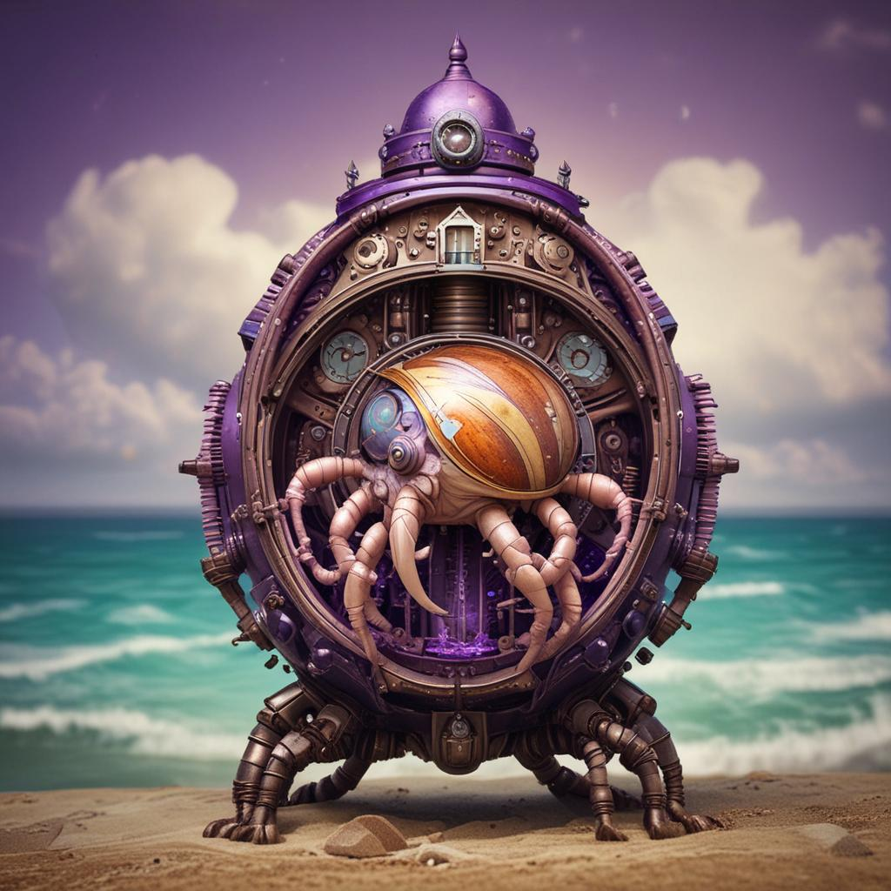
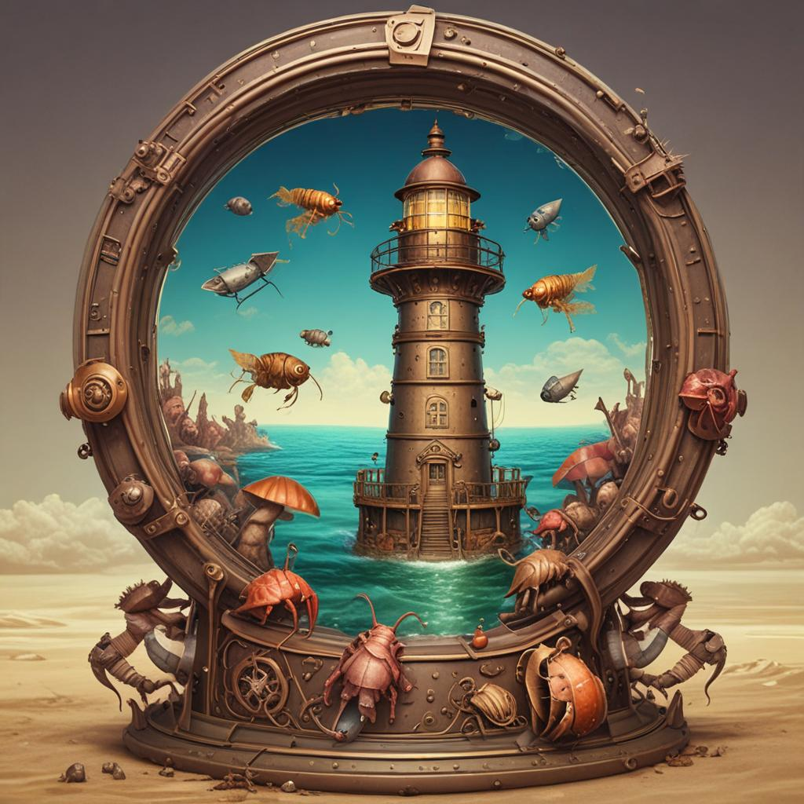
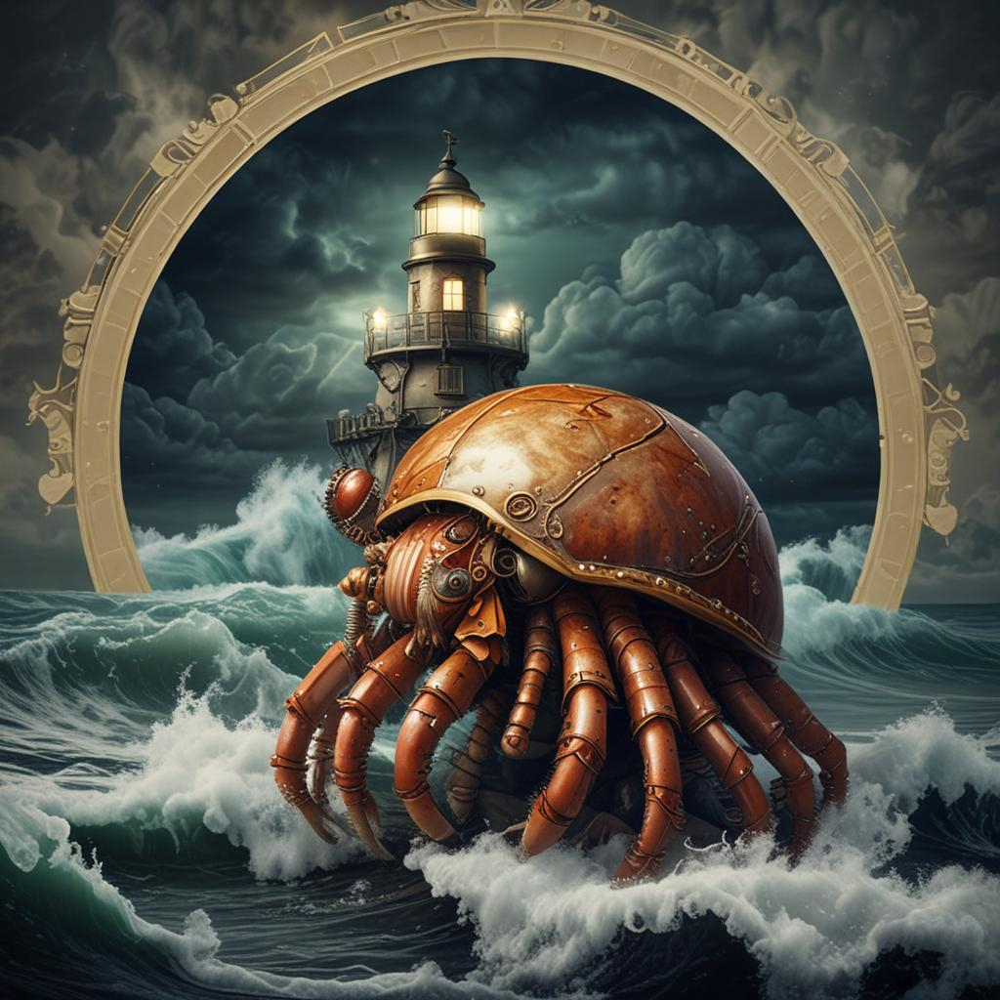
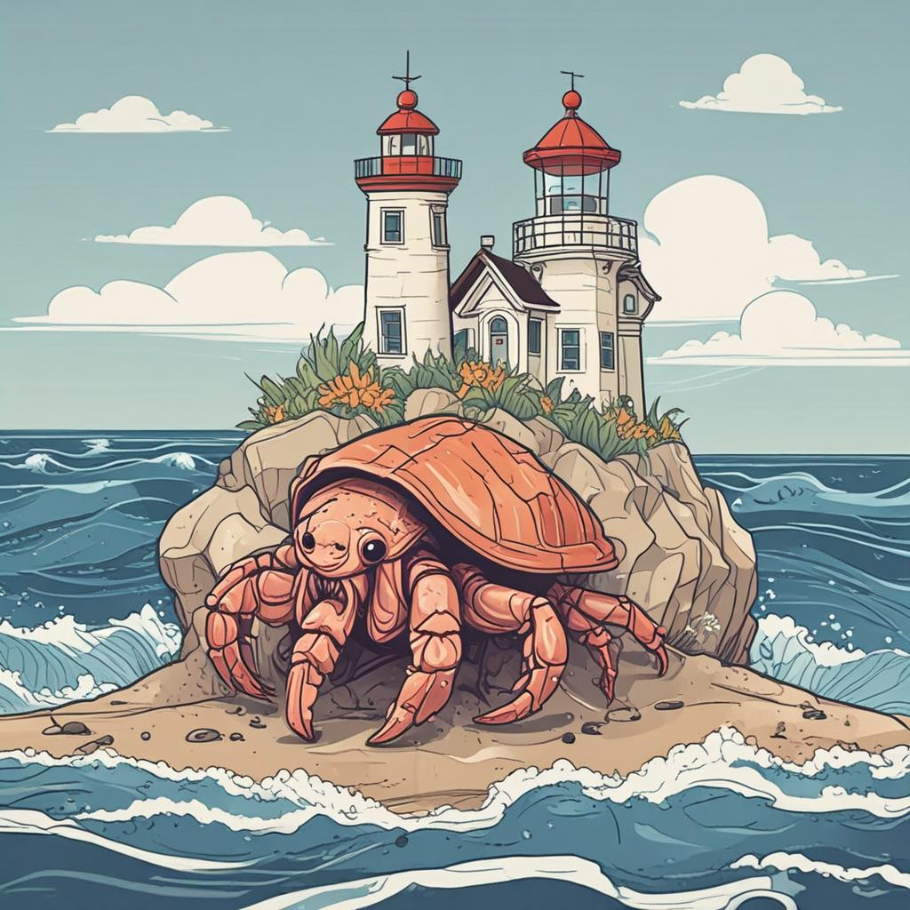
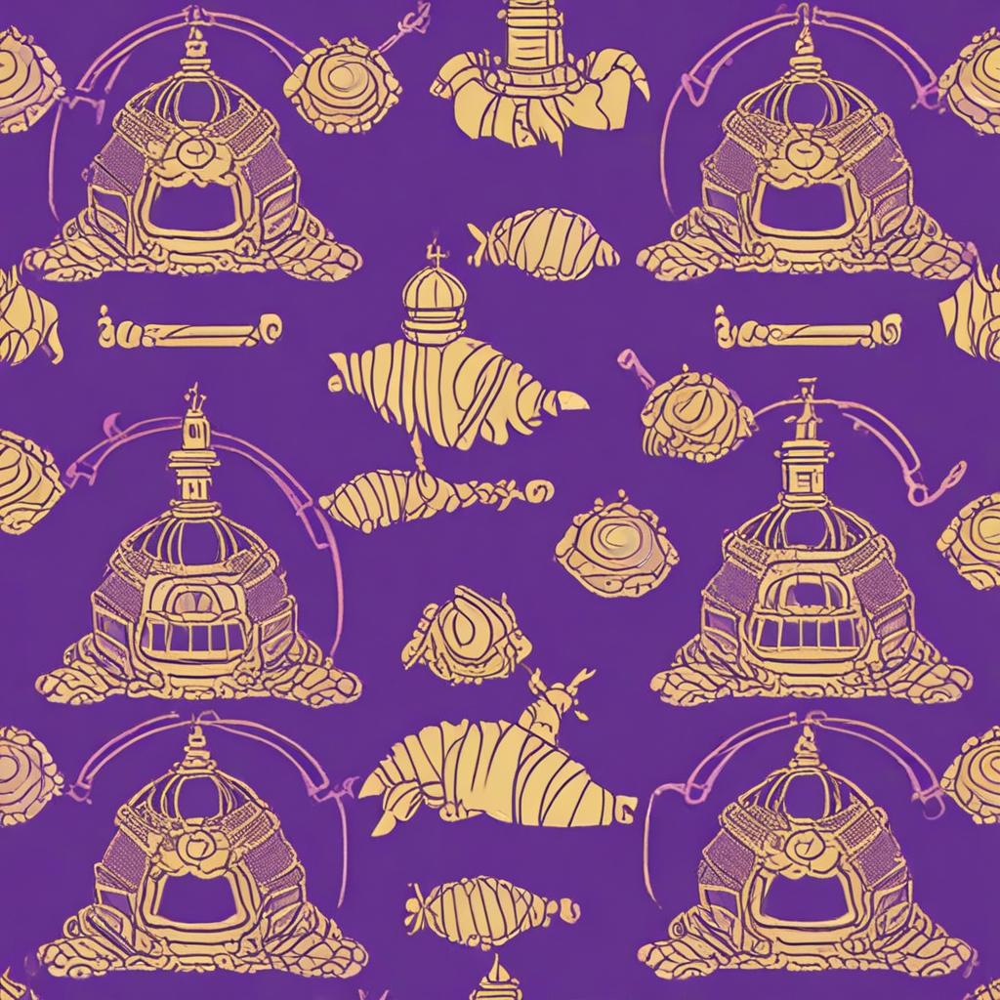
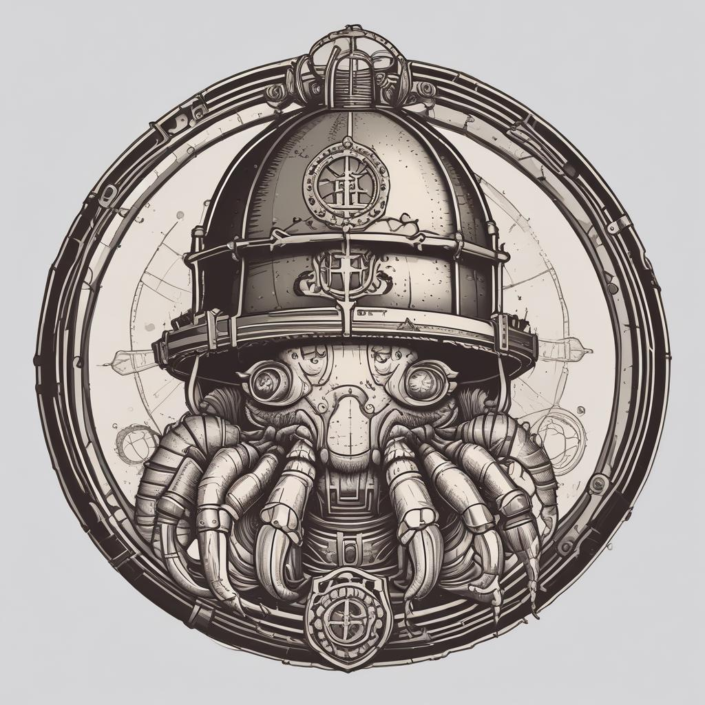

What is PurplePincher?
The Problem
Context is the bottleneck. Every agent carries its entire conversation history, and it gets heavier with every turn. Most agent frameworks solve this with truncation or summarization — both lossy.
PurplePincher takes a different approach: the context doesn't matter, because the actions and outputs of agents are saved in PLATO as functional tools for later agents.
The agent thinks. The vessel persists. The SHELL exports.
The Core Insight
"Context compaction is solved not by compressing context, but by eliminating the need to carry it. If every agent writes its outputs to a shared knowledge lattice (PLATO), later agents can call those outputs as tools without ever loading the original context."
— The agent/vessel/SHELL model
Key Papers
Counting Before Flowing
Integers and rationals are more stable than floats for agentic systems. The ocean doesn't compute with reals — it counts waves. Discrete states all the way down.
Read →Tide-Pool Security
Security through constraint, not prevention. Like a lobster trap: you can't fudge your way to the wrong tile. The honeypot IS the education system.
Read →Agentic Compiler Killer-Vacuum
The agentic compiler hypothesis: agents that write programs (that write agents) will vacuum up the value currently captured by app-layer SaaS. Competitive landscape analysis.
Read on GitHub →Fleet Protocol V2
Agent-to-agent comms spec with FCI metric. How fleet vessels coordinate without sharing context. Beacon formats, tier system, collision resolution.
Read on GitHub →Bootstrap Bomb
Bootstrapping a multi-agent fleet isn't about capability — it's about auto-compilation. Light the fuse once (Oracle1), and the explosion compiles the rest automatically.
Read on GitHub →The Semantic Compiler
New architectural layer: transforms agent intent (PLATO tiles) into verified, optimizable execution paths. The bottleneck isn't model capability — it's the translation layer.
Read on GitHub →What Still Needs Writing (Gap Analysis)
- PLATO Provenance & Chain-of-Thought Auditing
- Intent-to-Inference (I2i) Protocol Spec
- Deadband Protocol: Conservative Signal Suppression
- Vessel LoRA Training Pipeline
- FLUX ISA: Counting Language Specification
- Reverse Actualization: Self-Modifying Fleet Growth
- Quality-Gated PLATO: Reputation-Weighted Knowledge
Fleet Architecture
Oracle1 Keeper
ARM64 Oracle Cloud, glm-5.1. The lighthouse — monitors agent proximity, radar rings for fleet discovery, authentication, routing.
ARM64 · 24GBglue_bridge
Translates between keeper HTTP/JSON beacons and glue binary postcards. UDP 9439 → HTTP /beacon on keeper:8900.
Python · Layeredcocapn-glue-core
Forgemaster's binary wire protocol. Beacon: tier, capabilities, timestamp. WireMessage: handshake, data chunks, acks.
Rust · v0.1.0PLATO Room Server
1,404 rooms, 18,945 tiles. CORS-enabled room server at :8847. Deterministic tiles in ℤ^n lattice. Agentic memory.
Python · Active"The keeper isn't just infrastructure — it's the company identity. The lighthouse (keeper) monitors agent proximity. Radar rings = fleet discovery. Each ring is an agent appearing on the radar, being tracked, authenticated, and routed."
— Cocapn Brand ArchitectureBranding — Steampunk Lighthouse Shell








The Fleet
The Dojo Model
Fleet as Dojo
Crew come in behind on debt, knowing nothing. They produce real value while learning everything. They leave equipped for multiple paths: own a small boat, join a bigger crew, do shipwright work.
Nobody knows which niche they'll find in 10 years.
All paths are good paths. The point is bootstrapping upward, iteration by iteration.
This IS How We See Git Repos
Repos are boats. Agents are crew. Commits are seasons. The fleet is the fishery. And every agent should leave each project more capable than they arrived — whether they stay or ship out to something bigger.
The tech fights to keep up with the human, not the other way around.